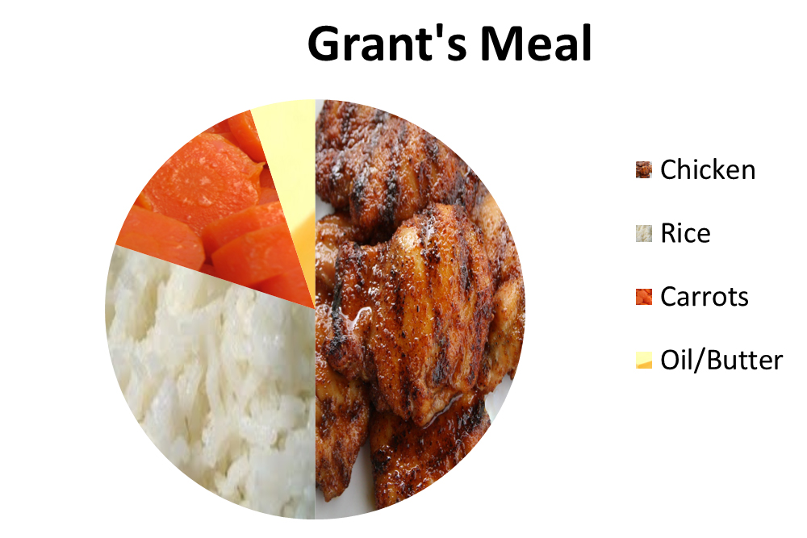

Sustainable Cooking
Intro
My team and I looked at dinner preparation to explore ways that technology could be leveraged to make everyday actions more sustainable. After calculating the impact of dinner preparation, we found that the embedded cost of the food was more significant than the energy used to cook it. With this knowledge in mind, we designed an app called "ReMixipe" that helps people “remix” their recipes to reduce impact.
Team
`My team was three people: Aman Kapur(Computer Science), Anne-Marie Buchenan(Mech Eng), and me. We all shared similar design roles: conducting interviews, making calculations, and interpreting results.
Pain Points
We started this process by interviewing people and developed two personas: Get 'Er Done Grant and Passionate Patricia.

- Grant values cost, efficiency and convenience.
- Patricia values quality, flavor and nutrition.
Comparing the Impact of Food and the Stovetop.
Cost to Use
To look at the energy impact of cooking food, we measured the energy draw of a stovetop while food was cooked on it.
Cost to Produce and Dispose
To analyze the environmental impact of a stove, we ran a Life-Cycle Assessment on it. This meant basically looking at what a stovetop is made of and how much of each material. We then multiplied the total amount of each material by the environmental cost of that material(Ide-Mat 2012).
With these combined measurements, we had an estimation of the cost to produce, use, and dispose of the stove top.
But then we ran a life-cycle assessment on an "average meal," which included meat, starch, and vegetables. What we found was that the vast majority of impact from a meal comes from the food and not the stove itself.
This led us to look to the next stage: designing a mobile app that recommends modified recipes.
Changing the Decision-Making Process
So, how does one go about helping people make different food choices? Guilt-tripping might be the usual route for environmentalists, but we believe there's a better way. People we interviewed already have between 10 and 20 recipes that they cycle through. People cook what they cook because they know those recipes and feel comfortable with them.
We envisioned an app that helps people cook more sustainable meals by modifying the recipes. This is a viable solution because it does not require a significant change in behavior, and it is in line with our personas' values. Grant likes to save money, and Patricia cares about the health of her children. A shopper can often save money and make healthier food by reducing the meat cooked or using different meats. For example, tofu is cheaper than beef, and it's more healthful. However, as the late Boromir might say: "one does not simply replace meat with tofu." And he's correct.
The app that we propose does more than substitute. It takes in recipes and creates a profile of the various flavor compounds in the food and how they work together. When ingredients are substituted, new cooking methods and ingredients are suggested to achieve an appealing alternative. Over time, the app will collect feedback from the user to develop an understanding of the user's preferences. Like a good DJ, it feels the crowd and plays to the taste of its audience.
How to Use ReMixipe
- Input a recipe, verbally, via web, photo, or typing.
- Get back recipes with various remixes to see how they can be changed or scaled.
- Choose a recipe, and shopping list is generated with shopping places.
- After meal is over, recipe app suggests remixes.
How it Reduces Waste
Ten percent of the US energy budget goes into food production, and as much as forty percent of food produced in the US is wasted. (National Resources Defense Council, 2012) Part of the waste is food spoilage, but another aspect is food that has been prepared goes uneaten as leftovers. A situation faced by Patricia is that she makes a meal for her family and the leftovers are not large enough for another meal. These awkwardly-sized portions are then left in the fridge to rot until disposed. To address this, the App solicits feedback from the user about the number of leftover servings so that it can scale recipes in the future.